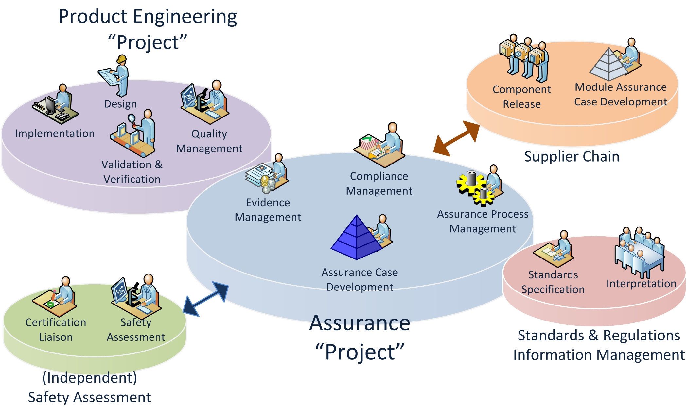
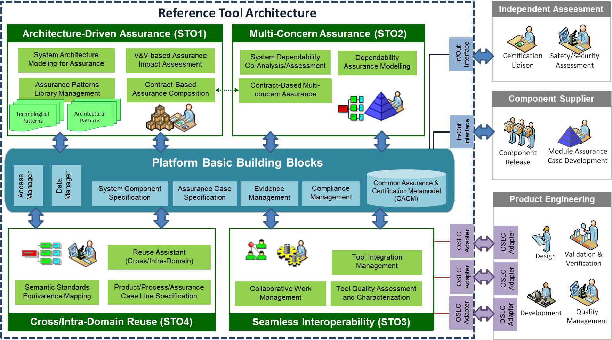

OpenCERT
OpenCert is an integrated and holistic solution for assurance and certification management of Cyber-Physical Systems (CPS) spanning the largest safety and security-critical industrial markets, such as aerospace, space, railway, manufacturing, energy and health. The ultimate aim is to lower certification costs in face of rapidly changing product features and market needs.

Approach
To deal with the technical CPS complexity and the associated labor-intensive activities for qualifying and certifying these systems, OpenCert uses model-based approaches and incremental techniques. The OpenCert tool platform focuses on architecture-driven assurance, multi-concern assurance (mainly safety and cybersecurity), reuse-oriented assurance (intra and cross-industrial domains) and seamless interoperability between assurance/certification and engineering activities along with third-party activities (external assessments, supplier assurance).

Features
- Standards & Regulations Information Management: This feature supports management of knowledge about standards (e.g. IEC61508, DO178C, ISO26262, EN 50128/50126/50129, among others), regulations and interpretations, in a form that can be stored, retrieved, categorized, associated, searched and browsed.
- Assurance ‘Project’ Management: Functionalities concerned with the development of assurance cases (safety and security cases), evidence management, and assurance process management. They include: guidance and re-use of assurance artefacts, ability to automate the most labor-intensive activities (e.g., traceability, compliance checking, assurance process planning, and metrics management, among others).
- Architecture-Driven Assurance: This feature manages system architecture specification by decomposing a system into components. It also includes mechanisms to support compositional assurance, contract based approaches, and architectural patterns management. It allows users to browse information about the architecture of the system of interest and how the entities of the architecture can be related to the assurance case.
- Assurance Case Management: This feature manages argumentation information in a modular fashion. Assurance cases are a structured form of an argument that specifies convincing justification that a system is adequately dependable for a given application in a given environment. Assurance cases are modelled as connections between claims and their evidence. It also includes mechanisms to support assurance patterns management.
- Compliance Management: The OpenCert tools help ‘engineers’ assess where they are with respect to their duties to conform to safety practices and standards, and still to motivate them to see the effective progress of the work and level of compliance.
Benefits
- Reduce Initial & Rework Costs: guidance for compliance with standards/regulations and reuse of assurance/certification assets
- Coping with Risks: deployment of safety and security analyses and cost-effective and transparent assurance/certification processes
- OpenCert helps create a transparent view of the process and product quality against a set of harmonized compliance requirements derived from standards and regulations.
- Through the use of knowledge-based systems, quantitative methods and modular reuse techniques, OpenCert reduces compliance management and (re) certification costs.